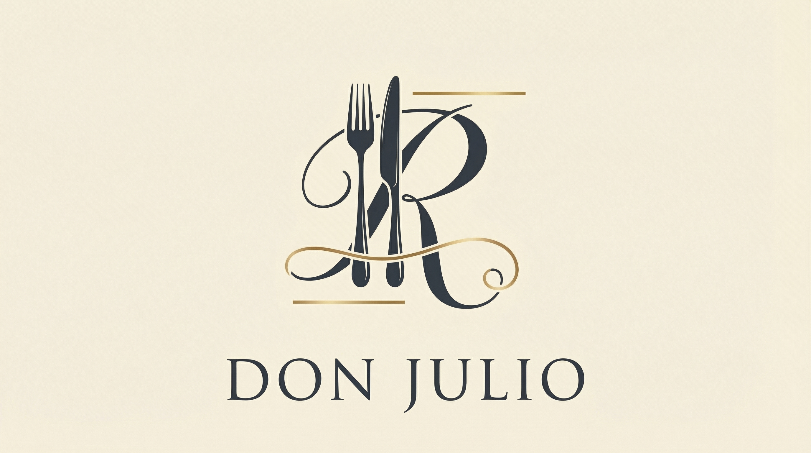

click y arrancamos

Don Julio
Desayunos y Meriendas de 8 a 12 hs - de 16 a 19 hs
Incluye café con leche o Infusión + Exprimido Pequeño
- 2 Medialunas $4.500
- 1 Budín a elección $6.700
- Bagels con queso crema y mermelada $8.900
- Huevo revuelto mas tostadas $7.000
- Croissant $8.900
- Tostada de Palta $10.500
- Tostadas de Palta y queso crema $11.500
1
Menú Principal
Especialidades de la Casa
- Ojo de Bife con Papas $15.500
- Salmón a las Hierbas $18.900
- Ravioles de Calabaza $12.400
2
Postres
El toque dulce
- Tiramisú de la Casa $5.200
- Vino Reserva (Copa) $4.800
Bebidas
- Jugo de Naranja $1.800
- Gaseosa (Sprite,Fanta,Coca) $2.500
- Agua Mineral (Copa) $2.000
- Cerveza Heineken (Lata 500cc) $4.500
- Cerveza Corona (Porrón) $5.000
- Cerveza Andes Rubia $8.000
3